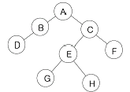
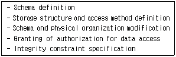
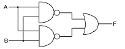
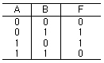
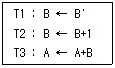
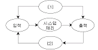
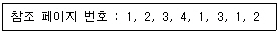
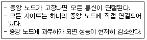
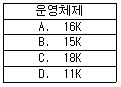

정보처리산업기사 (2006-05-14 기출문제)
1과목: 데이터 베이스
1. 데이터 삽입, 삭제가 top 이라고 부르는 한쪽 끝에서만 이루어지는 후입선출(LIFO) 형태의 자료 구조를 무엇이라 하는가?
- 스택(stack)
- 큐(queue)
- 데크(deque)
- 원형 큐(circular queue)
(정답률: 91%)

2. Which of the following is a language that allow users to create new database and specific their schema?
- Data definition language
- Data manipulation language
- Data reference language
- Data control language
(정답률: 72%)
3. 데이터베이스 관리시스템(DBMS)의 필수 기능이 아닌 것은?
- 정의 기능
- 관리 기능
- 조작 기능
- 제어 기능
(정답률: 78%)
4. 관계 데이터 모델에서 릴레이션의 특성으로 잘못된 것은?
- 한 릴레이션에는 똑같은 튜플이 중복 포함될 수 있다.
- 한 릴레이션에 포함된 튜플 사이에는 순서가 없다.
- 한 릴레이션을 구성하는 애트리뷰트 사이에는 순서가 없다.
- 모든 속성 값은 원자값이다.
(정답률: 78%)
5. 아래 이진트리를 후위순서(postorder)로 운행한 결과는?

- ABCDEFGH
- DBGHEFCA
- ABDCEGHF
- BDGHEFAC
(정답률: 81%)
6. 다음 중 큐를 필요로 하는 작업은?
- 작업 스케줄링
- 중위표기식의 후위표기 변환
- 함수 호출과 리턴
- 이진트리의 중위 순회
(정답률: 85%)
7. 비선형구조에 해당하는 것은?
- 그래프
- 데크
- 스택
- 큐
(정답률: 92%)
8. E-R 다이어그램에서 개체를 의미하는 기호는?
- 사각형
- 마름모(다이아몬드)
- 삼각형
- 타원
(정답률: 87%)
9. 어떤 릴레이션에 속한 모든 도메인이 원자값(atomic value)만을 가지며, 기본키가 아닌 애트리뷰트 모두가 기본키에 완전 함수 종 속이나 이행적 함수 종속이 나타나면 어떤 정규형에 해당하는가?
- 제 1정규형
- 제 2정규형
- 제 3정규형
- 제 4정규형
(정답률: 54%)
10. SQL 문에서 테이블 생성에 사용되는 문장은?
- DROP
- ALTER
- SELECT
- CREATE
(정답률: 86%)
11. 마스터 파일에 기록된 정보 내용을 변경하거나 참조할 경우 일시적인 성격을 지닌 정보를 기록하고 있는 파일을 의미하는 것은?
- Transaction file
- Report file
- Program file
- Backup file
(정답률: 83%)
12. 관계 데이터 모델에서 애트리뷰트가 취할 수 있는 값들의 집합을 의미하는 것은?
- 릴레이션
- 도메인
- 튜플
- 차수
(정답률: 65%)
13. 이진 검색(Binary search) 기법을 적용하기 위한 선행 조건은?
- 자료가 정렬되어 있어야 한다.
- 같은 크기의 자료가 존재해서는 안된다.
- 자료의 개수가 짝수이어야 한다.
- 자료의 개수가 홀수이어야 한다.
(정답률: 76%)
14. 데이터베이스 3단계 구조 중 사용자나 응용 프로그래머가 사용할 수 있도록 데이터베이스를 정의한 것은?
- 외부 스키마(External Schema)
- 개념 스키마(Conceptual Schema)
- 내부 스키마(Internal Schema)
- 관계 스키마(Relational Schema)
(정답률: 64%)
15. 데이터베이스 설계 단계중에서 개념적 설계 다음에 수행하는 단계는?
- 요구조건 분석
- 논리적 설계
- 물리적 설계
- 구현
(정답률: 85%)
16. 아래 설명과 가장 밀접한 사람은?

- Database administrator
- Network manager
- End user
- Application Programmer
(정답률: 86%)
17. 데이터베이스의 장점에 해당되지 않는 것은?
- 데이터의 공유성
- 데이터의 중복성
- 데이터의 일관성
- 데이터의 무결성
(정답률: 88%)
18. SQL의 데이터 정의문(DDL)이 아닌 것은?
- CREATE
- DROP
- ALTER
- INSERT
(정답률: 83%)
19. 하나 또는 둘 이상의 기본 테이블로부터 유도되어 만들어 지는 가상 테이블은?
- 뷰
- 시스템 카탈로그
- 스키마
- 데이터 디렉토리
(정답률: 90%)
20. 데이터베이스에서 아직 알려지지 않거나 모르는 값으로서 “해당없음” 등의 이유로 정보 부재를 나타내기 위해 사용하는 특수한 데이터 값을 무엇이라 하는가?
- 원자값(atomic value)
- 참조값(reference value)
- 무결값(integrity value)
- 널값(null value)
(정답률: 96%)
2과목: 전자 계산기 구조
21. 서브루틴과 연관되어 사용되는 명령어는?
- Shift
- Call과 Return
- Skip과 Jump
- Increment와 Decrement
(정답률: 68%)
22. 컴퓨터의 연산자 기능이 아닌 것은?
- 기억 기능
- 제어 기능
- 전달 기능
- 함수 연산 기능
(정답률: 47%)
23. 14개의 어드레스 비트는 몇 개의 메모리 장소의 내용을 리드(Read)할 수 있는가?
- 14
- 140
- 16384
- 32768
(정답률: 68%)
24. 전원공급이 중단되어도 내용이 지워지지 않으며, 전기적으로 삭제하고 다시 쓸 수도 있는 기억장치는?
- SRAM
- PROM
- EPROM
- EEPROM
(정답률: 66%)
25. 데이터를 4 비트 단위로 나타내는 정보 단위는?
- nibble
- character
- full-word
- double-word
(정답률: 64%)
26. 다음 회로의 출력 f가 0(zero)이 되기 위한 조건은?

- A=0, B=0
- A=0, B=1
- A=1, B=0
- A=1, B=1
(정답률: 69%)
27. 소프트웨어적인 인터럽트 요구 장치 판별법인 것은?
- 벡터 인터럽트
- 폴링
- 스택
- 핸드쉐이킹
(정답률: 74%)
28. 다음 진리표에서 출력 논리식 F를 유도하면?

- A+B
- A‘B+AB
- A‘B+AB’
- AB+A‘ B‘
(정답률: 68%)
29. 패리티 비트(parity bit)에 관한 설명 중 옳지 않은 것은?
- 기수(odd) 체크에 사용될 경우도 있다.
- 우수(even) 체크에 사용될 경우도 있다.
- 정보 표현의 단위에 여유를 두기 위한 방법이다.
- 정보가 맞고, 틀림을 판별하기 위해 사용된다.
(정답률: 75%)
30. JK 플립플롭의 트리거 입력과 상태 전환 조건을 설명한 것 중 옳지 않은 것은?
- J=0, K=0 일 때 기억 기능이 된다
- J=0, K=1 일 때 0으로 된다.
- J=1, K=0 일 때 1로 된다.
- J=1, K=1 일 때 반전치 않는다.
(정답률: 56%)
31. 버스 경합을 줄이기 위한 방법이 아닌 것은?
- 슈퍼스칼라 사용
- 버스의 고속화
- 캐시의 사용
- 다중 버스 사용
(정답률: 62%)
32. 다음과 같이 세 개의 마이크로 동작이 발생할 경우에 동작 완료 후 레지스터 A의 상태는?

- A ← A+B'+1
- A ← B+B'+1
- A ← A'+B+1
- A ← A'+B+B'+1
(정답률: 61%)
33. ASCll 문자에 해당 되지 않는 것은?
- 제어 문자
- 영문자
- 로마 숫자
- 아라비아 숫자
(정답률: 62%)
34. 이웃하는 코드가 한 비트만 다르기 때문에 코드 변환이 용이해서 A/D 변환에 주로 사용되는 코드는?
- Gray code
- Hamming code
- Excess-3 code
- Alphanumeric code
(정답률: 60%)
35. 보조기억장치로 부적합한 것은?
- 자기 디스크
- DVD
- 자기 테이프
- SDRAM
(정답률: 68%)
36. (396)10을 8421 Code로 변환하면?
- 0011 1001 0110
- 0101 1001 1000
- 0011 1001 0011
- 0101 0010 1000
(정답률: 77%)
37. 제어방식 중 일정한 시간 간격으로 발생한 펄스에 따라 계산기의 각 부분의 동작을 규칙적으로 진행시키는 방식은?
- 비동기식 제어 방식
- 동기식 제어 방식
- 비주기식 제어 방식
- 직류 방식
(정답률: 77%)
38. 기억된 정보의 일부분을 이용하여 원하는 정보가 기억된 위치를 알아낸 후 그 위치에서 나머지 정보에 접근하는 기억장치를 무엇이라 하는가?
- Cache memory
- Associative memory
- Virtual memory
- Main memory
(정답률: 62%)
39. RRI(Register to Register Instruction)의 전체 가능한 수를 A, MRI(Memory Reference Instruction)의 전체 가능한 수를 B라고 할 때, 상호 관계로 올바른 것은?
- B, A = 0
- B > A
- B = A
- B < A
(정답률: 53%)
40. random access가 불가능한 보조기억 장치는?
- 자기테이프 장치
- 자기드럼 장치
- 자기디스크 장치
- 버블기억 장치
(정답률: 68%)
3과목: 시스템분석설계
41. 시스템 평가 항목의 요소와 거리가 먼 것은?
- 신뢰성 평가
- 가격 평가
- 성능 평가
- 기능 평가
(정답률: 88%)
42. 시스템에 대한 설명으로 거리가 먼 것은?
- 데이터 처리 시스템에서 규정, 수단, 순서, 방법, 루틴, 장치 등이 하나의 목적 하에 결합되어 그 사이에 존재하는 상호작용이 정해진 방법에 따라 조정되는 것이다.
- 상호 관련성이 없는 구성 요소를 조합하여 각각의 목적 달성을 위하여 조직한 임시적 결합체이다.
- 어떤 목적 또는 목표를 위하여 여러 기능 요소가 상호 관련하여 결합된 절차나 방법의 유기적 집합체이다.
- 컴퓨터 시스템은 중앙처리 장치, 기억장치, 각종 입출력 장치, 통신 회선 등의 유기적인 결합체이다.
(정답률: 74%)
43. IPT(Improved Programming Technique)의 기술적인 측면과 거리가 먼 것은?
- 복합설계
- 구조적 코딩
- 하향식 프로그래밍
- 상향식 프로그래밍
(정답률: 62%)
44. 코드의 오류 형태 중 입력시 좌우 자리를 바꾸어 발생하는 에러는?
- transposition error
- transcription error
- random error
- omission error
(정답률: 83%)
45. 시스템의 기본요소를 나타낸 그림이다. (1), (2)의 내용으로 알맞은 요소는?

- (1) 순환 (2) 제어
- (1) 피드백 (2) 제어
- (1) 반복 (2) 분기
- (1) 제어 (2) 피드백
(정답률: 76%)
46. HIPO(Hierarchy plus Input Process Output)에 대한 설명으로 옳지 않은 것은?
- 프로그램의 기능을 계층 구조로 도식화함으로써 개발 순서를 논리적으로 전개할 수 있는 수단이다.
- 상향식 중심이며, HIPO의 3단계 종류는 overview diagram, detailed diagram, data dictionary 이다.
- 각각의 기능을 용이하게 이해할 수 있다.
- 표준화된 문서 작성 기법을 사용하므로 의사 전달 착오 가능성이 매우 적다.
(정답률: 69%)
47. 시스템 개발 단계로 옳은 것은?
- 시스템 조사 → 설계 → 분석 → 구현 → 유지보수
- 시스템 조사 → 분석 → 설계 → 유지보수 → 구현
- 시스템 조사 → 분석 → 설계 → 구현 → 유지보수
- 시스템 조사 → 설계 → 분석 → 유지보수 → 구현
(정답률: 77%)
48. 코드(code) 설계시 유의사항으로 거리가 먼 것은?
- 컴퓨터 처리에 적합하여야 한다.
- 공통성이 있어야 한다.
- 다양성이 있어야 한다.
- 확장성이 있어야 한다.
(정답률: 72%)
49. 객체에 정의된 연산을 의미하며, 객체의 상태를 참조 및 변경하는 수단은?
- 클래스
- 상속
- 메소드
- 엔티티
(정답률: 69%)
50. 객체 지향 분석을 사용하는 이유로 적합하지 않은 것은?
- 공동된 속성을 명백히 표현할 수 있다.
- 사람이 사고하고 인지하는 틀 내에서 시스템의 요구 사항을 정의하며, 사용자와 정보를 교환할 수 있다.
- 한 객체와 다른 객체와의 종속성을 증대 시킨다.
- 사용자가 속해 있는 실 세계의 문제 영역을 이해하는데 중점을 둔다.
(정답률: 53%)
51. 문서화의 목적에 대한 설명으로 옳지 않은 것은?
- 시스템 개발 프로젝트 관리의 효율화
- 소프트웨어 이관의 용이함
- 시스템 유지보수의 효율화
- 시스템 개발과정의 요식행위화
(정답률: 80%)
52. 자료 흐름도의 구성 요소가 아닌 것은?
- 자료흐름(Data Flow)
- 자료사전(Data Dictionary)
- 자료저장소(Data Store)
- 처리(Process)
(정답률: 62%)
53. 전표처리에서 원장 또는 대장에 해당되는 파일로서 데이터처리 시스템에서 중추적 역할을 담당하며 기본이 되는 데이터의 축적파일은?
- 마스터 파일(Master file)
- 트랜잭션 파일(Transaction file)
- 히스토리 파일(History file)
- 섬머리 파일(Summary file)
(정답률: 66%)
54. 색인 순차 파일은 기본 데이터 영역(prime data area), 색인 영역(index area), 오버플로우 영역(overflow area)으로 구성된다. 이 중 색인 영역(index area)에 해당하지 않는 것은?
- data index area
- track index area
- cylinder index area
- master index area
(정답률: 70%)
55. 체크 시스템은 컴퓨터 입력 단계의 체크와 계산 처리 단계의 체크로 구분할 수 있다. 다음 중 컴퓨터 입력 단계의 체크에 해당되지 않는 것은?
- 불일치 레코드 체크(Unmatch record check)
- 일괄 합계 체크(Batch total check)
- 순차 체크(Sequence check)
- 균형 체크(Balance check)
(정답률: 56%)
56. 코드화 대상 항목에 관련된 무게, 면적, 용량 등의 물리적 수치를 직접 코드에 적용하는 방법의 코드 체계는?
- 표의 숫자 코드(significant digit code)
- 순차 코드(sequence code)
- 십진 분류 코드(decimal classification code)
- 블록 코드(block code)
(정답률: 77%)
57. 객체 지향 개념에서 이미 정의되어 있는 상위 클래스(수퍼클래스 혹은 부모 클래스)의 메소드를 비롯한 모든 속성을 하위 클래스가 물려 받는 것을 무엇이라 하는가?
- abstraction
- method
- inheritance
- message
(정답률: 57%)
58. 프로세스의 표준 처리 패턴 중 마스터 파일 내의 데이터를 트랜잭션 파일로 추가, 변경, 삭제하여 항상 최근의 정보를 갖는 마스터 파일을 유지하는 것은?
- 매체 변환(Conversion)
- 정렬(Sort)
- 갱신(Update)
- 병합(Merge)
(정답률: 83%)
59. 하나 이상의 유사한 객체들을 묶어서 하나의 공통된 특성을 표현한 개체 지향의 요소는?
- 객체(object)
- 클래스(class)
- 실체(instance)
- 메시지(message)
(정답률: 85%)
60. 시스템의 출력 설계에서 종이에 출력하는 대신 출력정보를 마이크로필름에 수록하는 방식은?
- CRT 출력 시스템
- X-Y 플로터 시스템
- 음성 출력 시스템
- COM 시스템
(정답률: 66%)
4과목: 운영체제
61. 가상 기억 장치 시스템에서 가상 페이지 주소를 사용하여 데이터를 접근하는 프로그램이 실행될 때, 프로그램에서 접근하려고 하는 페이지가 주기억 장치에 있지 않은 경우 발생하는 현상은?
- page fault
- context switching
- mutual exclusion
- overlay
(정답률: 72%)
62. UNIX 운영체제에서 가장 핵심적인 부분으로 하드웨어를 보호하고 응용프로그램들에게 서비스를 제공해 주는 것은?
- kernel
- shell
- IPC
- process
(정답률: 76%)
63. 3페이지가 들어 갈 수 있는 기억장치에서 다음과 같은 순서로 페이지 번호가 참조될 때 FIFO 기법을 사용하면 최종적으로 기억공간에 남는 페이지 번호는? (단, 현재 기억 장치는 모두 비어 있다고 가정한다.)

- 3, 4, 1
- 4, 1, 2
- 2, 3, 4
- 1, 2, 3
(정답률: 63%)
64. 선점형(preemptive) 스케줄링 기법에 해당하는 것은?
- FIFO 스케줄링
- SJF 스케줄링
- HRN 스케줄링
- Round-Robin 스케줄링
(정답률: 61%)
65. 구역성(Iocality)에 대한 설명으로 옳지 않은 것은?
- 프로세스가 실행되는 동안 일부 페이지만 집중적으로 참조되는 경향을 말한다.
- 시간구역성은 최근에 참조된 기억장소가 가까운 장래에도 계속 참조될 가능성이 높음을 의미한다.
- 공간구역성은 하나의 기억장소가 참조되면 그 근처의 기억장소가 계속 참조되는 경향이 있음을 의미한다.
- 프로세스가 효율적으로 실행되기 위해 프로세스에 의해 자주 참조되는 페이지들의 집합을 말한다.
(정답률: 65%)
66. 운영체제의 설계 목표가 아닌 것은?
- 빠른 응답시간
- 경과 시간 단축
- 처리량 감소
- 폭넓은 이식성
(정답률: 73%)
67. 분산 처리 시스템의 네트워크 위상(Topology)에 따른 분류 중 아래 설명에 해당하는 구조는?

- hierachy connection
- star connection
- ring connection
- multiaccess connection
(정답률: 80%)
68. 최적 적합(best fit) 기법을 이용한다면 12K 크기의 프로그램은 아래 그림 중 주기억장치의 어느 부분에 할당하여야 하는가?(단, A, B, C, D는 사용가능한 공간의 크기를 표시하고 있음)

- A
- B
- C
- D
(정답률: 73%)
69. 스케줄링의 목적으로 옳지 않은 것은?
- 단위 시간당 처리량을 최대화 하기 위하여
- 오버헤드를 최대화 시키기 위하여
- 응답시간과 자원의 활용간에 균형을 유지하기 위하여
- 대화식 사용자에게 가능한 빠른 응답을 주기 위하여
(정답률: 80%)
70. 로더의 기능에 해당하지 않는 것은?
- 할당(Allocation)
- 실행(Execution)
- 연결(Linking)
- 재배치(Relocation)
(정답률: 56%)
71. UNIX 시스템에서 이용자와 시스템을 연결해 주는 매체로서 명령문 해석기라고 할 수 있는 것은?
- 커널(kernel)
- 쉘(shell)
- 인터프리터(inter)
- 소켓(socket)
(정답률: 75%)
72. 인터럽트의 종류 중 프로그램 명령 사용법이나 지정법에 잘못이 있을 경우, 허용되지 않는 명령문 실행의 경우, divide by zero의 경우 등에 발생하는 것은?
- 입출력 인터럽트
- 외부 인터럽트
- 프로그램 검사 인터럽트
- 기계 검사 인터럽트
(정답률: 65%)
73. 다음과 같은 트랙이 요청되어 큐에 도착하였다. 모든 트랙을 서비스하기 위하여 SCAN 스케줄링 기법이 사용되었을 때 트랙 35는 요청된 트랙 중 몇 번째 찾게 되는가? (단, 현재 헤드의 위치는 50 트랙이고, 헤드는 트랙0 방향으로 움직이고 있다.) (문제 오류로 그림파일이 없습니다. 정답은 2번입니다. 원본을 가지고 계신분께서는 관리자에게 메일로 보내주시면 감사하겠습니다.)
- 1
- 2
- 3
- 4
(정답률: 51%)
74. 빈번한 페이지의 부재 발생으로 프로세스의 수행 소요시간보다 페이지 교환에 소요되는 시간이 더 큰 경우를 의미하는 것은?
- 스레싱(thrashing)
- 세마포어(semaphore)
- 페이징(paging)
- 오버레이(overlay)
(정답률: 63%)
75. UNIX 시스템의 특징이 아닌 것은?
- 대화형의 시분할 시스템
- 계층적 파일 시스템
- Stand alone
- 네트워킹 시스템
(정답률: 64%)
76. 특정 레코드를 검색하기 위하여 키(Key)와 보조기억 장치 사이의 물리적인 주소로 변환할 수 있는 사상 함수(mapping function)가 필요한 파일은?
- 순차 파일
- 인덱스된 순차파일
- 직접 파일
- 분할 파일
(정답률: 46%)
77. 둘 이상의 프로세스들이 서로 다른 프로세스가 차지하고 있는 자원을 요구하며 무한정 기다리게 되어 해당 프로세스들의 진행이 중단되는 현상을 무엇이라 하는가?
- semaphore1
- waiting
- synchronization
- deadlock
(정답률: 71%)
78. 라운드로빈(Round Robin) 스케줄링에서 시간 할당량에 대한 설명으로 옳지 않은 것은?
- 시간 할당량이 커지면 FCFS 스케줄링과 같은 효과를 얻는다.
- 시간 할당량이 작아지면 프로세스 문맥 교환 횟수가 증가한다.
- 시간 할당량이란 단위 시간별로 작업 스케줄링을 하는 방식에서 그 단위 시간을 의미한다.
- 짧은 대화식 사용자에게는 시간 할당량을 크게 하는 것이 효율적이다.
(정답률: 66%)
79. 다중 프로그래밍 운영체제에서 한 순간에 여러 개의프로세스에 의하여 공유되는 데이터 및 자원에 대하여, 한 순간에는 반드시 하나의 프로세스에 의해서만 자원 또는 데이터가 사용되도록 하고, 이러한 자원이 프로세스에 의하여 반납된 후, 비로소 다른 프로세스에서 자원을 이용하거나 데이터를 접근할 수 있도록 지정된 영역을 의미하는 것은?
- monitor
- semaphore
- critical section
- working set
(정답률: 48%)
80. 운영체제의 기능으로 거리가 먼 것은?
- 사용자 인터페이스 제공
- 자원 스케쥴링
- 데이터의 공유
- 원시 프로그램을 목적 프로그램으로 변환
(정답률: 78%)
5과목: 정보통신개론
81. MHS의 기능으로서 옳지 않은 것은?
- 다양한 부가서비스를 제공한다.
- 동보 기능이 다양하다.
- 다른 텔레메틱 서비스와 상호접속이 가능하다.
- 신호변환 및 정보처리가 가능하다.
(정답률: 47%)
82. 다음 중 DTE/DCE 접속규격이 아닌 것은?
- RS-232C
- V.24
- X.75
- X.21
(정답률: 44%)
83. 정보통신시스템 중 데이터 전송계에 속하지 않는 것은?
- 단말장치
- 중앙처리장치
- 통신제어장치
- 데이터전송회선
(정답률: 70%)
84. 데이터 발생 현장에 설치된 단말기가 원격지에 설치된 컴퓨터와 통신회선을 통해 직접 연결된 형태는?
- 일괄처리 라인
- 오프라인
- 온라인
- 데이터베이스 라인
(정답률: 62%)
85. 디지털 전송로에서 디지털 신호를 전송하기 위해 필요한 장치는?
- MODEM
- DSU
- 부호기
- 복호기
(정답률: 66%)
86. 다음 중 광섬유 케이블의 설명으로 틀린 것은?
- 기계식 접속자를 이용한 접속이 가능하다.
- 레이저를 이용한 융착접속은 불가능하다.
- 장거리 고속 데이터의 전송이 가능하다.
- 고품질 전송이 가능하다.
(정답률: 77%)
87. OSI 7계층 중 데이터의 형식 처리와 암호화 등을 수행하는 계층은?
- 프리젠테이션 계층
- 세션 계층
- 응용 계층
- 트랜스포트 계층
(정답률: 57%)
88. 다음 중 뉴미디어의 특징과 가장 거리가 먼 것은?
- 단방향성
- 네트워크화
- 분산적
- 특정 다수자
(정답률: 78%)
89. SDLC에서 한 프레임(Frame)을 구성하는데 필요한 요소가 아닌 것은?
- 플래그(Flag)
- 번지 지정부(Address Field)
- 제어부(Control field)
- 논리 연산부(Arithmetic Logic Unit)
(정답률: 62%)
90. 펄스코드 변조방식(PCM)의 송신측 변조 과정은?
- 입력신호-부호화-양자화-표본화
- 입력신호-양자화-표본화-부호화
- 입력신호-표본화-양자화-부호화
- 입력신호-부호화-표본화-양자화
(정답률: 73%)
91. 다음 중 LAN에대한 설명 중 옳지 않은 것은?
- 광대역 전송매체의 사용으로 고속통신이 가능하다.
- 매우 낮은 오류율을 가지며, 방송 형태의 이용이 가능하다.
- LAN의 구성은 주로 공중망으로 이루어진다.
- 근거리 상호통신을 지원하고 워크스테이션 간을 연결하는데 사용한다.
(정답률: 58%)
92. 대역폭이 4[KHz]인 음성신호를 PCM 형태의 디지털신호로 변환하여 전송할 경우 신호의 전송속도는?(단, 양자화 레벨은 8비트)
- 4[kbps]
- 8[kbps]
- 32[kbps]
- 64[kbps]
(정답률: 28%)
93. 디지털 데이터를 아날로그 신호로 변환하는 방식이 아닌 것은?
- ASK
- PCM
- FSK
- PSK
(정답률: 76%)
94. 종합정보통신망(ISDN)의 채널 중 64[kbps]의 속도로 사용자 정보를 전달하기 위해 사용되는 채널은?
- A 채널
- B 채널
- C채널
- H 채널
(정답률: 59%)
95. LAN에서 사용하는 매체 액세스 제어방식 중 CSMA/CD에 관한 설명으로 틀린 것은?
- IEEE802.3 프로토콜 표준에 근거한다.
- 다른 전송 데이터가 감지되면 계속 선로 상태를 살펴서 선로가 휴지상태가 될 때 즉시 전송한다.
- 전송 도중 충돌이 감지되면 즉시 전송을 멈추고 다른 스테이션에 충돌을 알리는 재밍 신호를 전송한다.
- 재밍 신호를 전송한 후에 즉시 데이터 재전송을 시작한다.
(정답률: 39%)
96. 데이터 링크(data-link) 계층의 프로토골이 아닌 것은?
- HDLC(High-Level Data Link Control)
- ADCCP(Advanced Data Communication Control Procedure)
- LAP-B(Link Access Procedure Balanced)
- FTP(File Transfer Protocol)
(정답률: 55%)
97. 다음 중 패킷 교환망에 대한 설명으로 틀린 것은?
- 축적 전송기능에 의해 패킷 다중전송이 가능하다.
- 부호가 다른 단말장치 사이의 통신이 가능하다.
- 처리속도가 다른 단말장치 사이의 통신이 가능하다.
- 대량의 데이터 전송시 전송지연이 아주 적다.
(정답률: 68%)
98. 다음 중 RS-232C 인터페이스는 몇 개의 핀(PIN)으로 구성되는가?
- 15
- 20
- 25
- 30
(정답률: 67%)
99. OSI 7레벨 참조 모델에서 인접한 장치 간에 원활한 데이터의 전송이 이루어 지도록 규정하고 있는 계층은?
- 표현 계층
- 데이터 링크 계층
- 응용 계층
- 세션 계층
(정답률: 73%)
100. HDLC 방식에서 Flag의 형태에 해당되는 것은?
- 01111110
- 01010101
- 01100110
- 11011011
(정답률: 40%)